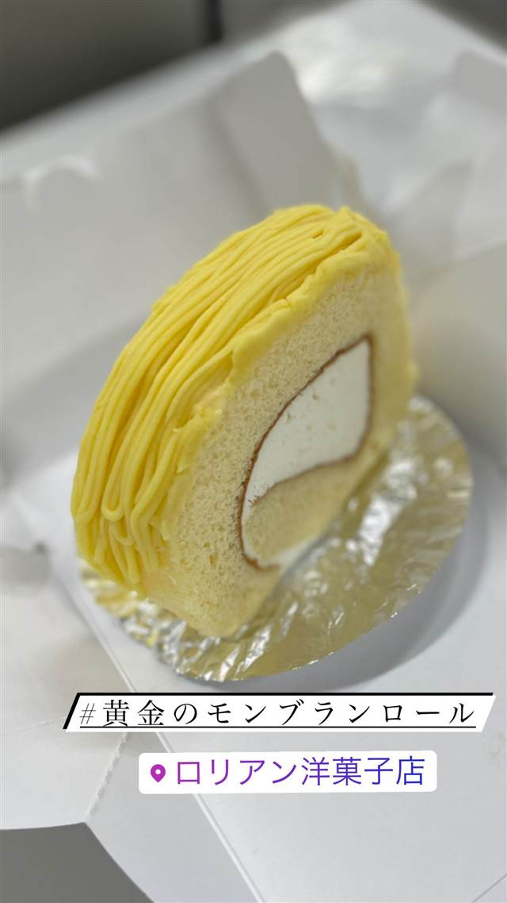

スイーツ · ケーキ・パフェ · 海老名
ロリアン洋菓子店
1965年創業、栗の甘露煮で仕立てる黄金色のモンブラン
ロリアン洋菓子店
神奈川県海老名市で1965年創業の老舗洋菓子店。創業以来変わらぬレシピで、厳選した栗の甘露煮を使った「黄金色のモンブラン」が看板商品で、地元の史跡や文化財、昔話をモチーフにした焼き菓子も展開している。
TRIVIA
豆知識
- 焼き菓子には海老名の史跡・文化財・昔話をモチーフにした商品がある
- 創業以来60年近くレシピを変えていないモンブランが看板商品
REVIEWS
世間の評判
3.31食べログ
ゴールデンモンブランロールの人気
- 定番のゴールデンモンブランロールがとても人気だという声が多い
- 甘さ控えめでさっぱりとしたクリームの味わいを評価する声が多い
- 地元でも休日の朝は行列ができるほど混み合う人気店だという声が多い
- 地元で約60年続く昔ながらの洋菓子店の雰囲気を評価する声もある
食べログ 口コミ141件
| 創業 | 1965年（昭和40年）創業 |
|---|---|
| 看板 | 黄金色のモンブラン、モンブランロールケーキ |
| こだわり | 創業以来変わらぬレシピで、厳選した栗の甘露煮を使い職人が一つずつ手作業で仕上げる |
| どこから | 東京から1時間ほど |
| 行くなら | 行列 |
| 予算 | 昼 ～¥999 夜 ～¥999 |
| 定休日 | 月曜 |
| 予約 | 予約可 |
| 場所 | さがみ野駅 神奈川県海老名市(さがみ野・かしわ台周辺) |
| メモ | 海老名市の老舗洋菓子店 |
食べたもの：モンブランロール
OFFICIAL
店からの知らせ
NEARBY
近い店・同じ系統の店
-
 ケーキ・パフェ 目白駅
AIGRE DOUCE（エーグルドゥース）
クープ・デュ・モンド準優勝シェフの苺のショートケーキ
昼 ¥1,000～¥1,999 夜 ¥1,000～¥1,999
ケーキ・パフェ 目白駅
AIGRE DOUCE（エーグルドゥース）
クープ・デュ・モンド準優勝シェフの苺のショートケーキ
昼 ¥1,000～¥1,999 夜 ¥1,000～¥1,999
-
 ケーキ・パフェ 自由が丘
パティスリー パリ セヴェイユ
ラデュレ仕込みの技が光るカヌレ、食べログ百名店の一軒
昼 ¥1,000～¥1,999 夜 ¥1,000～¥1,999
ケーキ・パフェ 自由が丘
パティスリー パリ セヴェイユ
ラデュレ仕込みの技が光るカヌレ、食べログ百名店の一軒
昼 ¥1,000～¥1,999 夜 ¥1,000～¥1,999
-
 ケーキ・パフェ 代々木公園駅
ナタ・デ・クリスチアノ（Nata de Cristiano's）
姉妹店の人気デザートが独立したポルトガル風エッグタルト
昼 ～¥999 夜 ～¥999
ケーキ・パフェ 代々木公園駅
ナタ・デ・クリスチアノ（Nata de Cristiano's）
姉妹店の人気デザートが独立したポルトガル風エッグタルト
昼 ～¥999 夜 ～¥999
-
 ケーキ・パフェ 白金高輪駅
メゾン・ダーニ（MAISON D'AHNI）
本場ビアリッツの老舗で出会った郷土菓子ガトーバスク
昼 ¥1,000～¥1,999
ケーキ・パフェ 白金高輪駅
メゾン・ダーニ（MAISON D'AHNI）
本場ビアリッツの老舗で出会った郷土菓子ガトーバスク
昼 ¥1,000～¥1,999
-
 ケーキ・パフェ 武蔵小山
パティスリィ ドゥ・ボン・クーフゥ 武蔵小山本店
月替わりパルフェは完全予約制のイートイン限定で持ち帰りができない
昼 ¥3,000～¥3,999 夜 ¥4,000～¥4,999
ケーキ・パフェ 武蔵小山
パティスリィ ドゥ・ボン・クーフゥ 武蔵小山本店
月替わりパルフェは完全予約制のイートイン限定で持ち帰りができない
昼 ¥3,000～¥3,999 夜 ¥4,000～¥4,999
-
 ケーキ・パフェ 銀座
珈琲専門店 三十間 銀座本店
地下の隠れ家で味わうふわふわチーズケーキとコーヒー
昼 ¥1,000～¥1,999 夜 ¥1,000～¥1,999
ケーキ・パフェ 銀座
珈琲専門店 三十間 銀座本店
地下の隠れ家で味わうふわふわチーズケーキとコーヒー
昼 ¥1,000～¥1,999 夜 ¥1,000～¥1,999